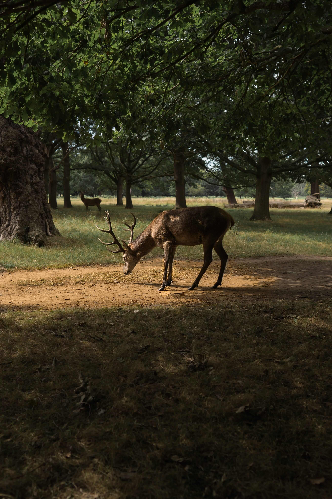

Why visit?
| Cirencester park, spread out across more than 1000 hectares, boasts beautiful, unspoiled woodland, open to the public every day of the year. |  |  |
 |
 |
With hundreds of miles of dog-friendly paths to choose from, discover the natural splendour of the park today! |